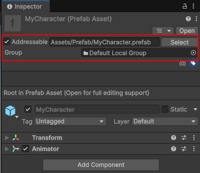
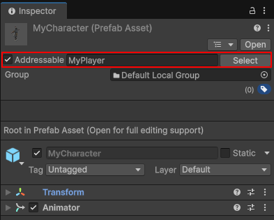
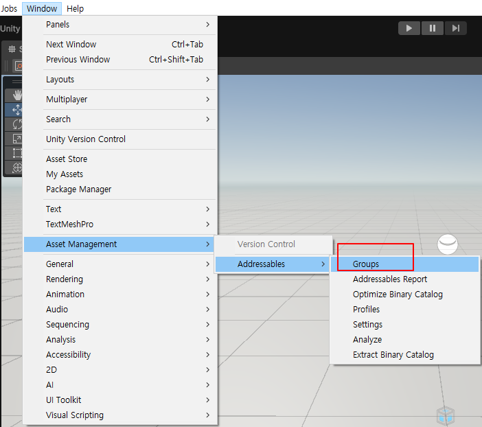
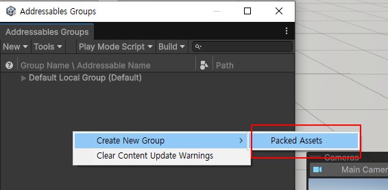
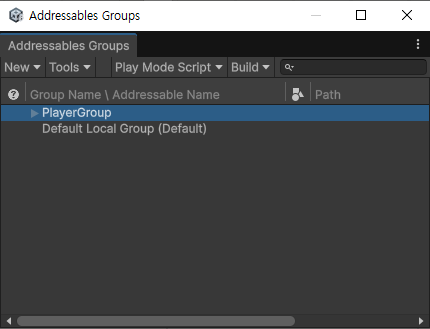
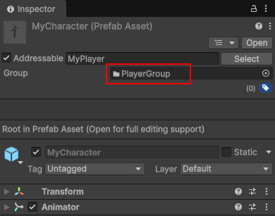

에셋을 주소(address)로 관리하고, 필요할 때 로드/해제할 수 있게 해주는 시스템입니다.
기존 방식이:
- 씬에 다 넣어두거나
- Resources.Load() 쓰거나
- AssetBundle 직접 관리해야 했다면
Addressables는 이걸 훨씬 안전하고 자동화된 방식으로 해결하고 있습니다.
기존방식의 문제점
- 빌드 크기 커짐
- 메모리 관리 지옥
- AssetBundle 직접 관리 → 실수 많음
- 업데이트할 때 전체 빌드 다시 해야 함
Addressables 장점
- 필요한 순간에만 로드
- 안 쓰면 바로 메모리 해제
- 로컬 / 원격(서버) 에셋 동일한 코드로 처리
- 라이브 서비스 & DLC에 최적
핵심 개념 5개
1. Address (주소)
에셋에 문자열 주소를 붙여서 접근함
"UI/MainMenu"
"Characters/Hero_01"
2. Addressable Asset
- Texture, Prefab, Audio, Scene
- 전부 Addressable로 만들 수 있음
- 에셋 선택 → Inspector에서 Addressable 체크
3. Group
에셋 묶음 단위
예:
- Default Local Group
- Remote Characters
- UI Group
여기서 결정됨:
4. 로드 방식 (비동기)
Addressables는 무조건 비동기 로드가 기본이야.
Addressables.LoadAssetAsync<GameObject>("Characters/Hero_01");
- 로딩 중 멈추는 거 없음
- 모바일/콘솔에서 특히 중요
5. 메모리 해제 (중요!)
쓴 만큼 반드시 Release 해줘야 함
Addressables.Release(handle);
이거 안 하면:
기본적인 사용 흐름
1. 패키지 설치: Window > Package Manager에서 Addressables를 설치합니다.
2. 에셋 등록: 인스펙터 창에서 에셋의 'Addressable' 체크박스를 활성화합니다.
(테스트이므로 문자열 주소와 그룹은 디폴트로 사용)
문자열 주소: "Assets/Prefab/MyCharacter.prefab"
그룹: Default Local Group로 지정

3. 코드 작성: 주소를 이용해 에셋을 불러옵니다.
빈 게임오브젝트를 만들고 컴포넌트로 추가 합니다.
1. 문자열 주소로 로드하기 (Direct Address)
AddressableLoadByAddress.cs
using UnityEngine;
using UnityEngine.AddressableAssets; // 어드레서블 네임스페이스
using UnityEngine.ResourceManagement.AsyncOperations; // 비동기 핸들 관련
public class AddressableLoadByAddress : MonoBehaviour
{
private GameObject spawnedObject;
void Update()
{
// 'S' 키를 누르면 로드 및 생성
if
(Input.GetKeyDown(KeyCode.S))
{
LoadAndSpawn("Assets/Prefab/MyCharacter.prefab");
}
// 'D' 키를 누르면 메모리 해제 및 파괴
if
(Input.GetKeyDown(KeyCode.D))
{
ReleaseAsset();
}
}
void LoadAndSpawn(string address)
{
// InstantiateAsync는 로드와 생성을 동시에 수행합니다.
Addressables.InstantiateAsync(address).Completed += OnLoadCompleted;
}
private void
OnLoadCompleted(AsyncOperationHandle<GameObject> handle)
{
if (handle.Status ==
AsyncOperationStatus.Succeeded)
{
spawnedObject = handle.Result;
Debug.Log("에셋 로드 성공!");
}
else
{
Debug.LogError("에셋 로드 실패");
}
}
void ReleaseAsset()
{
if (spawnedObject != null)
{
// 인스턴스를 파괴하고 메모리 참조 카운트를 감소시킵니다.
Addressables.ReleaseInstance(spawnedObject);
spawnedObject = null;
Debug.Log("에셋 해제 완료");
}
}
}
2. AssetReference 방식
인스펙터뷰에서 myAssetRef를 지정한 오브젝트를 스폰하고 해제합니다.
AddressableLoadByRef.cs
using UnityEngine;
using UnityEngine.AddressableAssets;
public class AddressableLoadByRef : MonoBehaviour
{
// 인스펙터에서 선택
가능하도록 노출
public AssetReference myAssetRef;
private GameObject instantiatedObj;
void Update()
{
// 'S' 키를 누르면 로드 및 생성
if
(Input.GetKeyDown(KeyCode.S))
{
LoadAndSpawn();
}
// 'D' 키를 누르면 메모리 해제 및 파괴
if
(Input.GetKeyDown(KeyCode.D))
{
ReleaseAsset();
}
}
public void LoadAndSpawn()
{
if
(myAssetRef.RuntimeKeyIsValid()) //
유효한 에셋인지 확인
{
myAssetRef.InstantiateAsync().Completed += (handle) => {
instantiatedObj = handle.Result;
};
}
}
public void ReleaseAsset()
{
if (instantiatedObj != null)
{
// 변수(AssetReference)를 통해 직접 해제
myAssetRef.ReleaseInstance(instantiatedObj);
instantiatedObj = null;
}
}
}
4. 문자열 주소 이름 수정
문자열 주소로 로드할때, 다른 문자열로 변경할수도 있습니다.
다음과 같이 Assressable을 "MyPlayer"로 수정 하였습니다.
코드에서도 수정된 이름으로 실행하면 됩니다.
LoadAndSpawn("MyPlayer");

5. 그룹 변경
Window > Asset Management > Addressables > Groups 으로
Addressables Groups 창을 오픈합니다.

그룹을 생성합니다.

그룹이름을 변경 합니다.
"Packed Assets"로 그룹이 추가 됩니다. 이름을 "PlayerGroup"으로 수정 합니다.

Group을 "PlayerGroup"으로 지정 합니다.

그룹은 "빌드 및 배포 단위"입니다
코드에서 LoadAndSpawn("MyPlayer")라고 호출할 때는 그룹이 어디든 상관없이 유니티가 알아서 찾아줍니다. 하지만
실제 게임을 빌드(파일로 추출)할 때 그룹의 진가가 나타납니다.
용도 구분:
- "기본 캐릭터는 설치 파일에 포함하고, 나중에 업데이트될 보스 몬스터는 서버에서 다운로드하게 하자!" 같은 결정을 그룹
단위로 합니다.
설정 예시:
- Local Group: 앱 설치 시 같이 설치됨 (빠름).
- Remote Group: 나중에 필요할 때 서버에서 받아옴 (앱 용량 줄임).
코드상에서 하나씩 호출할 때는 그룹을 신경 쓰지 않아도 됩니다. 하지만 "이 캐릭터를 서버에 올릴지, 기기에 저장할지" 혹은
"여러 캐릭터를 하나의 데이터 뭉치(Bundle)로 묶을지"를 결정하고 싶을 때 그룹을 나누게 됩니다.
실전 활용: 레이블(Label)과 함께 쓰기
그룹은 단순히 박스라면, 레이블(Label)은 박스 안에 포스트잇을 붙이는 것과 같습니다.
Address
- 특정 에셋 딱 하나 로드
- Addressables.LoadAssetAsync("MyPlayer")
Label
- 특정 태그가 붙은 에셋들 몽땅 로드
- Addressables.LoadAssetsAsync("Stage1_Enemies", ...)
Group
- 파일 관리 및 서버 업데이트 단위
- (코드보다는 에디터 설정 영역)
참고)
https://devshovelinglife.tistory.com/398
|